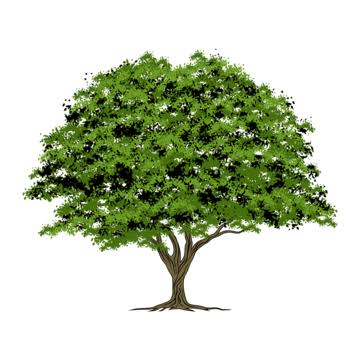
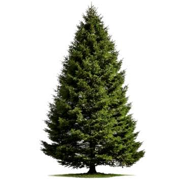

Дуб звичайний (Quercus robur) належить до родини букових і є одним із найпоширеніших листяних дерев Європи. Він утворює потужну крону та міцну деревину, тому здавна цінується в будівництві й столярній справі.
Це довгожитель лісів: окремі дерева живуть понад пів тисячоліття та досягають висоти тридцяти п’яти метрів. Кора з віком темніє й вкривається глибокими тріщинами, а листки мають хвилясті лопаті.
Жолуді дуба слугують кормом для кабанів, білок і соєк. Дубові ліси відіграють важливу роль у збереженні біорізноманіття, регулюють водний баланс і очищують повітря.